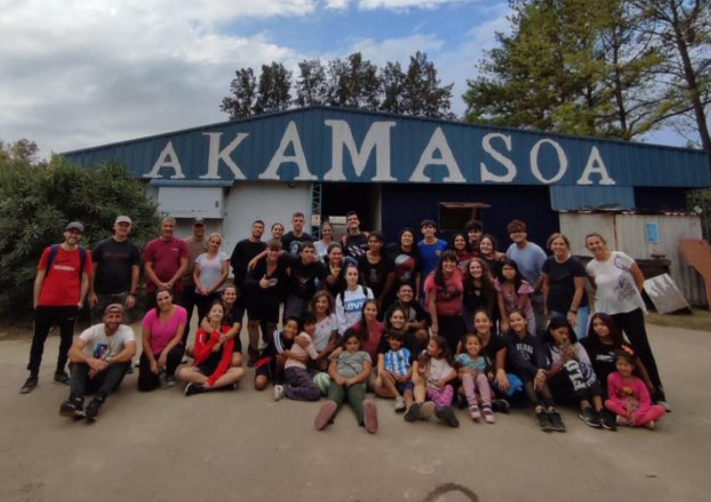
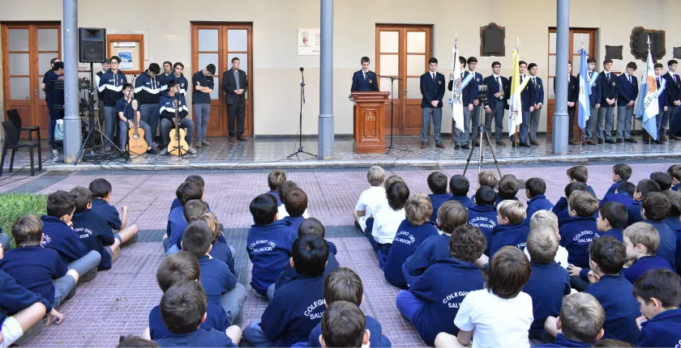

Últimas Noticias

5°Año 2023- Voluntariado Akamasoa Argentina
Volvimos a Akamasoa.Volvimos para sumarnos de la mejor manera que podemos a poner nuestro conocimiento y corazón al servicio...
15 de Enero de 2021

Acto 155° Aniversario del Colegio
Hoy celebramos, con memoria agradecida, los 155 años de la apertura del Colegio UNTREF
20 de Abril 2021
Lema 2023:"Seamos Sal y Luz, testimonio de la Paz"
Ustedes son la sal de la tieraa. Pero si la sal se vuelve insípirda, ¿cómo recobrará su sabor?"
9 de Agosto 2021